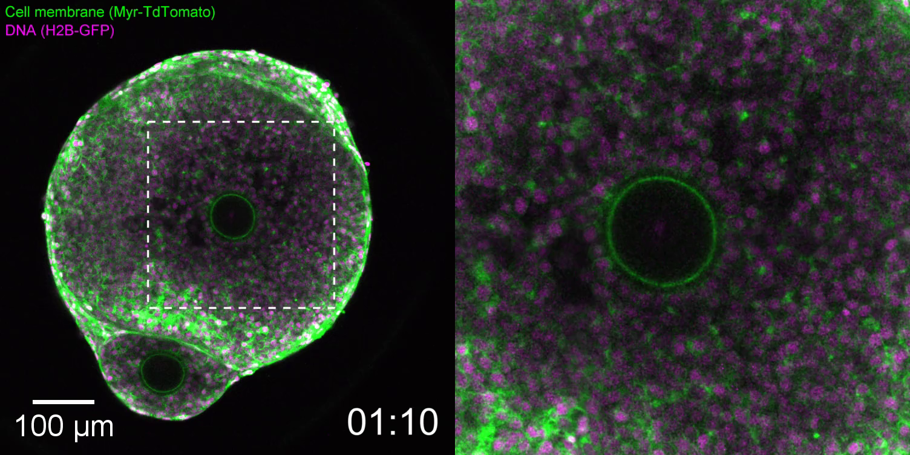
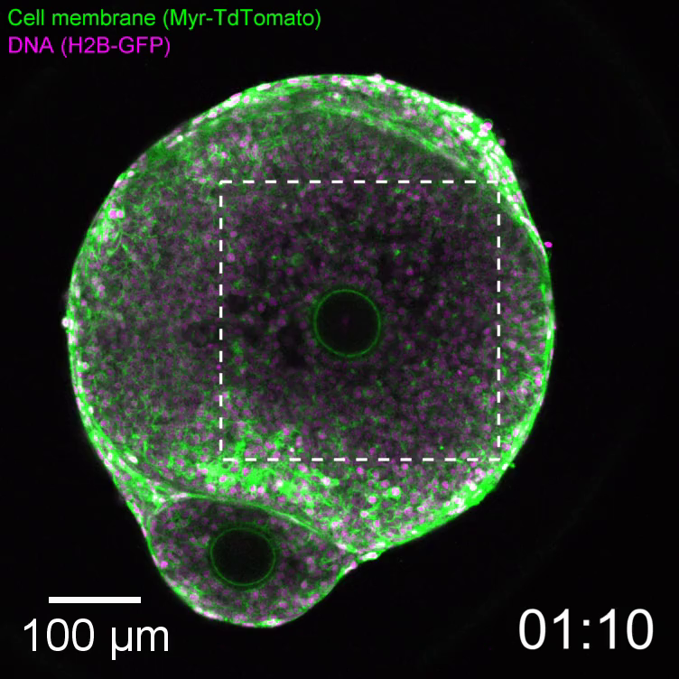
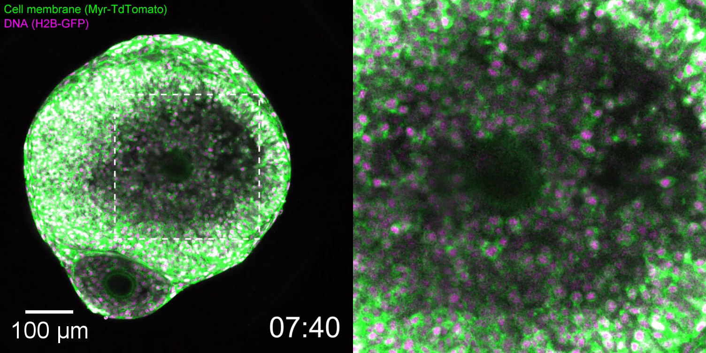
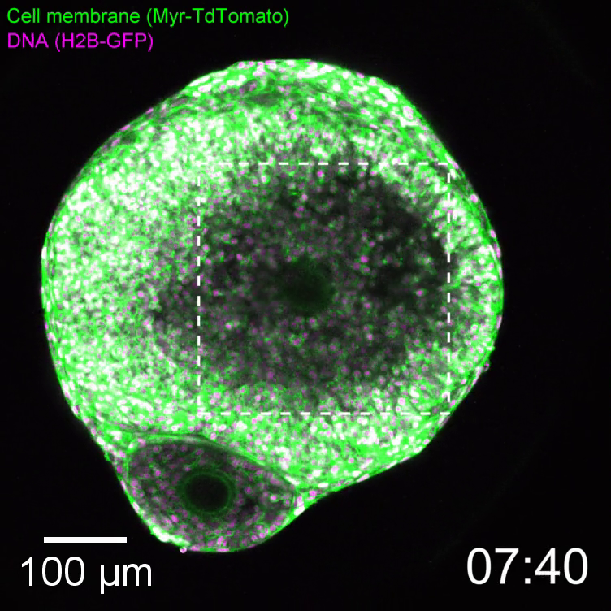
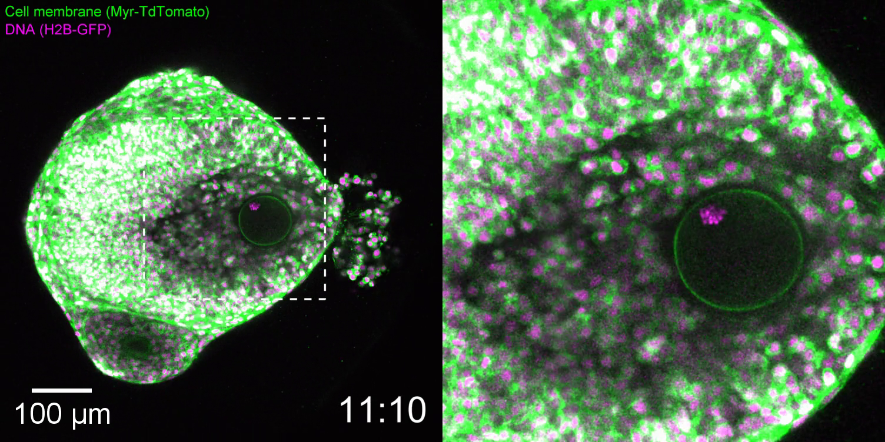
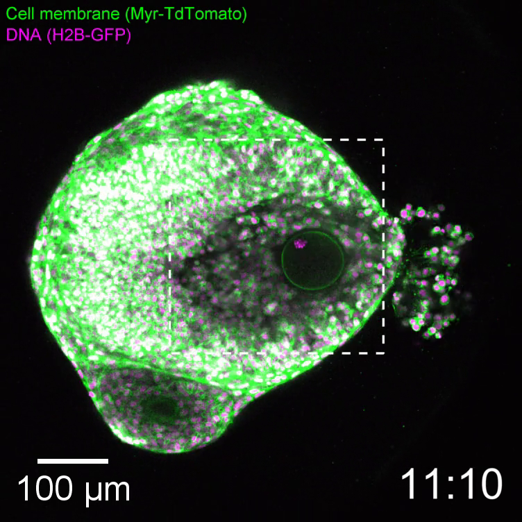
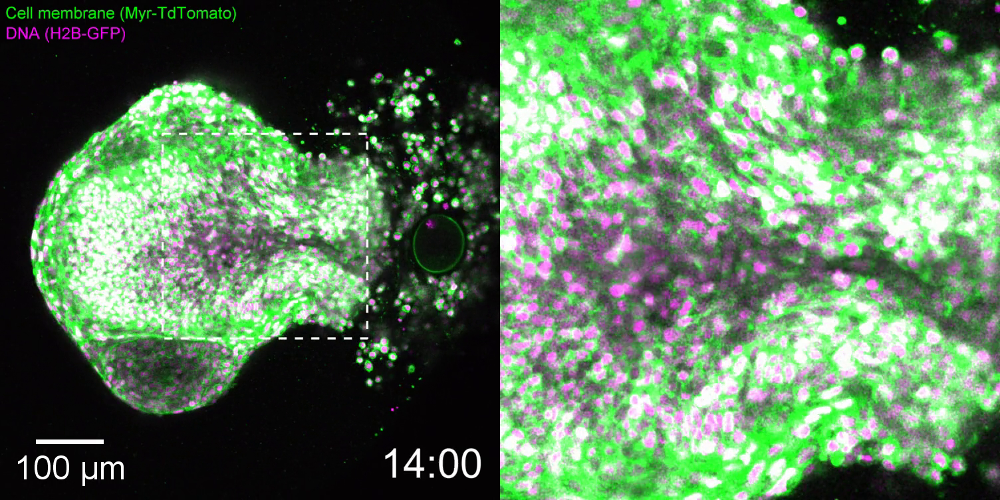

Expansion, changing contours and oocyte release
An isolated ovarian follicle is observed during experimentally induced ovulation. The left field provides follicle context; the right magnifies the dashed source region. This is not an intact human ovary or a recording of tubal capture.
Publication-file clock; original source clock is relative to hCG addition.
Female mouse, 23–28 days old; isolated follicle cultured with FSH, then exposed to 5 IU/ml hCG and 5 ng/ml EGF. Imaging medium was 37.5 °C with 5.5% CO₂. Experimental induction differs from an endogenous human LH surge.
Images were acquired every 10 minutes; the source clock runs from 01:10 to 14:00 relative to hCG addition. The publication plays 78 frames in 7.8 seconds. This sampled record does not resolve rapid rupture continuously or establish human ovulation timing, fluid pressure or fertilization.
Ordered source observations
Frame 0 · source clock 01:10


Frame 39 · source clock 07:40


Frame 60 · source clock 11:10


Frame 77 · source clock 14:00


Thomas, Marx, Penir and Schuh (2024), Ex vivo imaging reveals the spatiotemporal control of ovulation, Nature Cell Biology 26:1997–2008, Supplementary Video 1. © Authors; CC BY 4.0. Original 1504 × 752 H.264 MP4 is byte-identical to the publication file. Native full-field stills and explicitly cropped left-field details preserve decoded pixels; no retouch, colour grading, interpolation, new leader or scale. Source, preparation and exact crop record · Reproduction record.